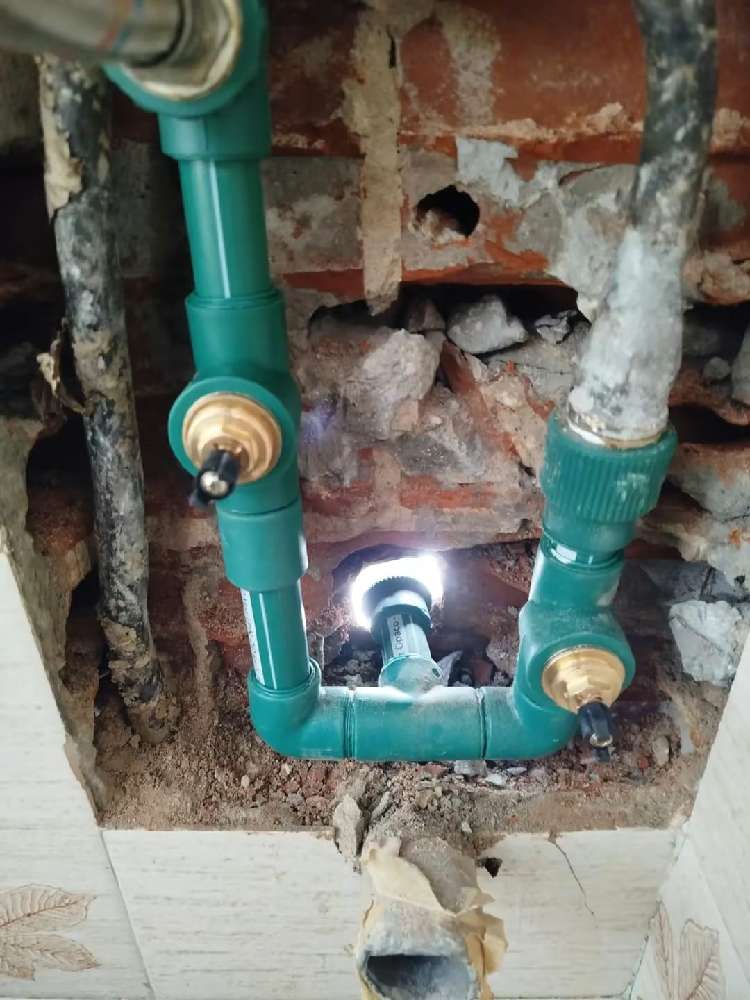
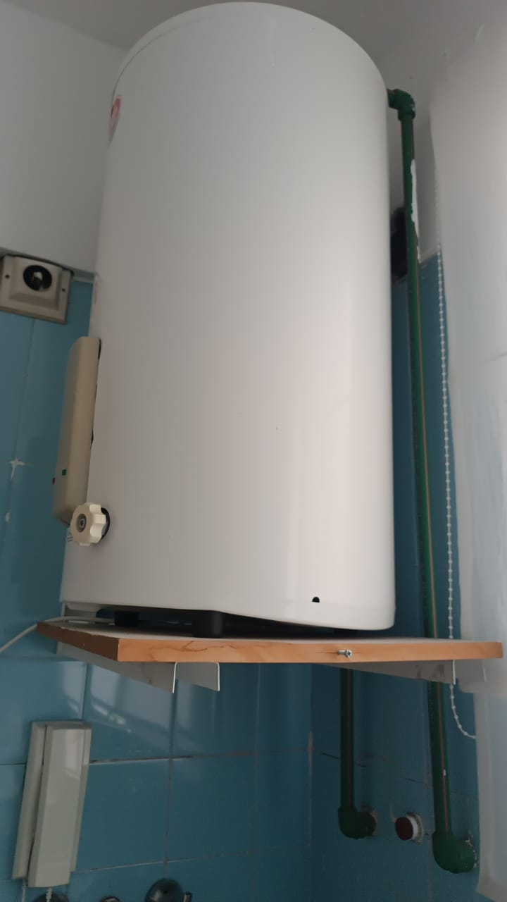
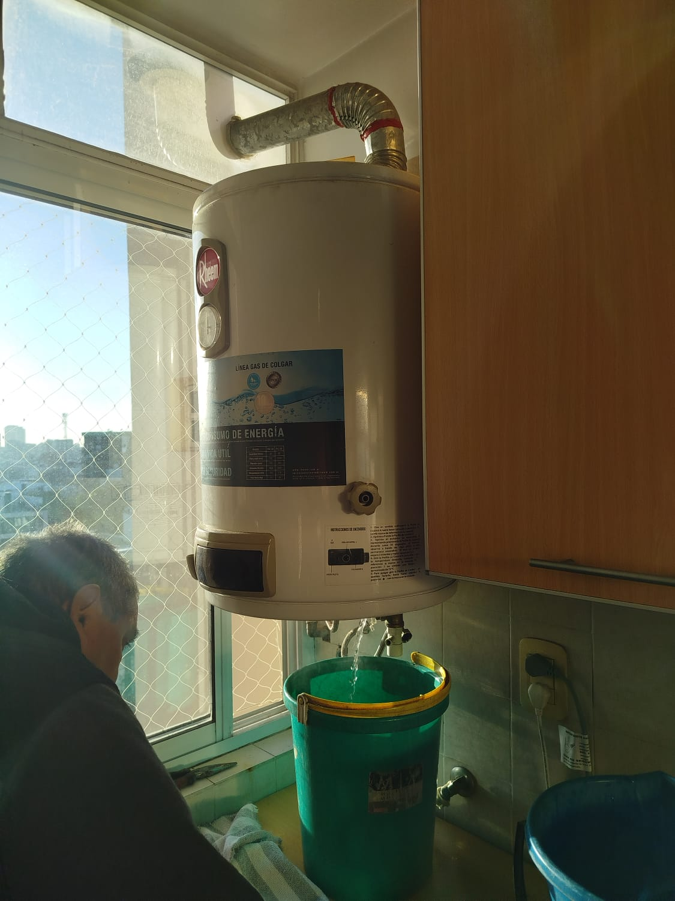
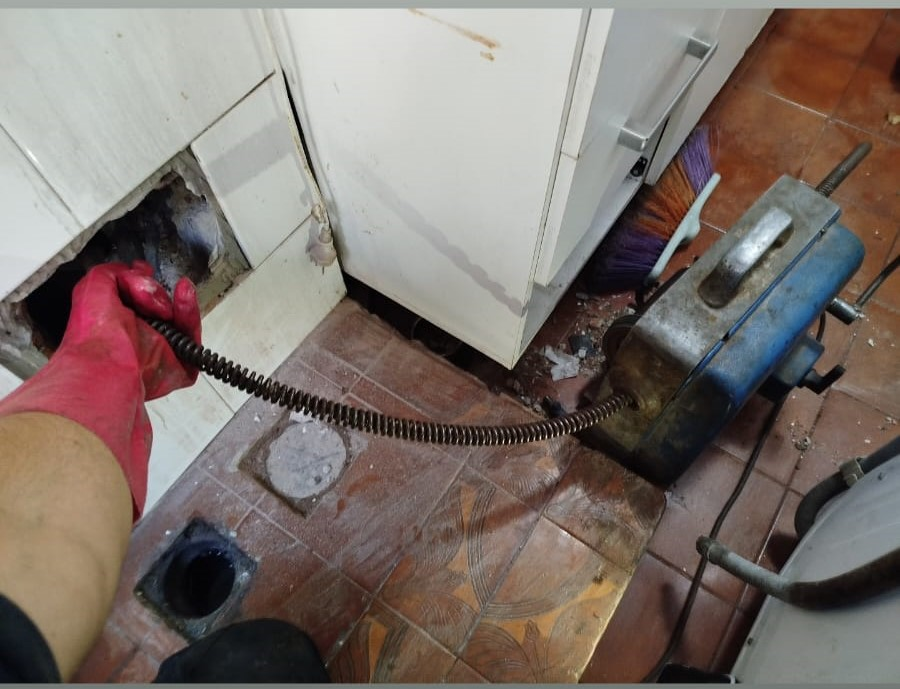
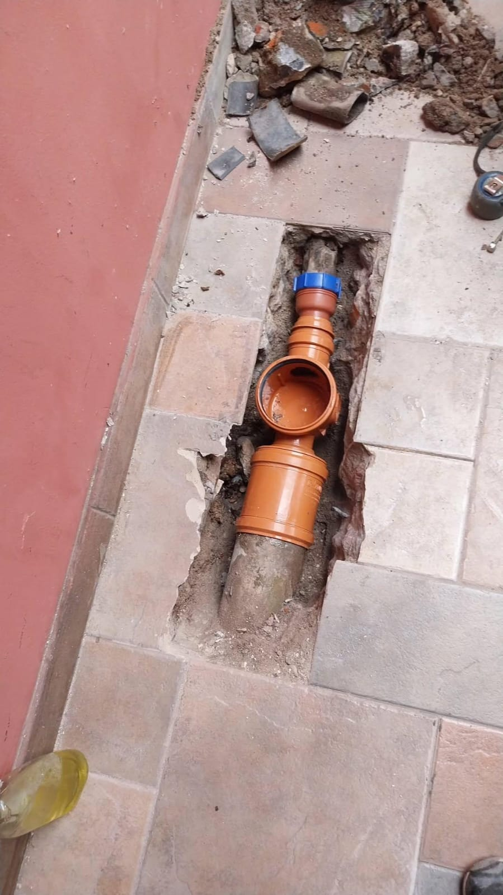
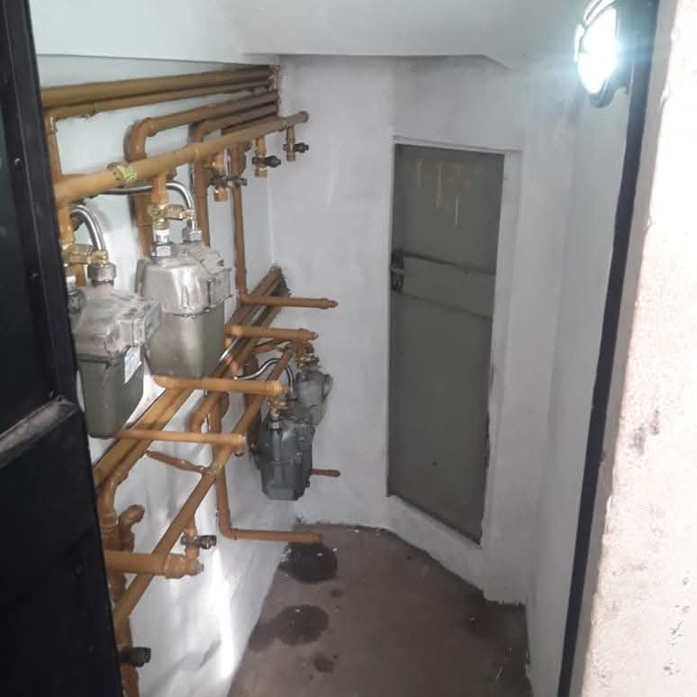

Plomería en Saavedra, Núñez, Belgrano, Villa Urquiza y Vicente López
Soluciones rápidas y definitivas para pérdidas de agua, filtraciones, cañerías, griferías y sanitarios. Enfocado a urgencias y trabajos bien terminados para evitar que el problema vuelva.
Reparación de pérdidas y filtraciones
- Detección de pérdidas de agua (baja presión, manchas, humedad).
- Reparación de cañerías y uniones (termo fusión / roscas).
- Cambio de llaves de paso, válvulas y flotantes.
- Soluciones prolijas y con garantía.
Griferías y sanitarios
- Monocomando, duchas, bidet, cocina y lavatorio.
- Mochilas, cisternas, válvulas, pérdidas de inodoro.
- Sifones y desagües de bacha.
- Instalación de cañerías de agua fría y caliente.
Trabajos para consorcios
- Reparaciones en departamentos y espacios comunes.
- Diagnóstico claro y coordinación por WhatsApp.
- Atención a urgencias con respuesta rápida.
- Trabajo prolijo y orientado a solución definitiva.
Gasista matriculado en Zona Norte y CABA
Instalaciones y reparaciones de gas con criterio profesional. Si hay olor a gas o dudas, se revisa y se deja seguro.
Detección y reparación de pérdidas
- Revisión de conexiones, llaves y flexibles.
- Corrección de pérdidas visibles y no visibles.
- Asesoramiento para evitar riesgos.
Calefones, termotanques y estufas
- Colocación y reparación.
- Revisión de funcionamiento y seguridad.
- Solución de fallas comunes.
Instalaciones y modificaciones
- Modificación de cañerías y recorridos.
- Conexión de cocinas y artefactos.
- Trabajo prolijo y orientado a norma.
Destapaciones en Saavedra, Núñez y Zona Norte | Urgencias 24 horas
Destapaciones con máquina para resolver urgencias en cocina, baño, cloacas y pluviales. Atención rápida en Saavedra, Núñez, Belgrano, Villa Urquiza y Vicente López.
Destapación de cloacas
- Cloaca tapada / rebalse / malos olores.
- Limpieza del tramo con máquina según cañería.
- Revisión de cámaras si corresponde.
Destapar inodoro y baño
- Inodoro tapado, descarga lenta, retorno.
- Diagnóstico para evitar roturas innecesarias.
- Solución rápida y prolija.
Cocina y lavadero
- Destapación de pileta, bacha, sifón y desagües.
- Grasa y acumulación: limpieza real del conducto.
- Recomendaciones para evitar que se repita.
Destapación pluvial
- Bajadas pluviales tapadas, rejillas, desagües.
- Prevención de filtraciones y desbordes.
- Trabajo orientado a solución definitiva.
Columnas y conductos
- Columnas en edificios y conductos compartidos.
- Intervención técnica según tipo de instalación.
- Atención a consorcios y administraciones.
Rejillas y cámaras
- Rejillas tapadas y drenaje lento.
- Limpieza y destapación con máquina si aplica.
- Se informa el estado y la causa probable.
Urgencias 24 horas (destapaciones y plomería)
Si hay rebalse, baño inutilizable o cloaca tapada, escribime por WhatsApp. Mandá foto o video y tu barrio (Saavedra, Núñez, Belgrano, Villa Urquiza o Vicente López).
WhatsApp 11 3666 3959Trabajos realizados
Ejemplos reales de plomería, gas y destapaciones en CABA y Zona Norte.
Instalaciones de agua

Termotanques y calefones


Destapaciones y cloacas


Instalaciones de gas

Preguntas frecuentes
Respuestas rápidas sobre plomería, gas y destapaciones en Saavedra, Núñez y Zona Norte.
¿Hacés plomería urgente en Saavedra y Núñez?
Sí. Trabajo con urgencias reales. Lo ideal es que me envíes fotos o video por WhatsApp y tu barrio para llegar con el repuesto.
¿Cómo sé si tengo una pérdida de gas?
Si sentís olor a gas, ventilá, cerrá la llave general y no enciendas luces ni llamas. Después coordinamos revisión con gasista matriculado.
¿Qué incluye una destapación con máquina?
Diagnóstico + destapación con máquina según cañería y limpieza del tramo. Si se detecta un problema estructural, se informa antes de avanzar.
¿Por qué se tapa seguido la cocina o el baño?
Por grasa, restos de comida, pelo, sarro o falta de pendiente. Se destapa y si corresponde se recomienda corrección para evitar recurrencia.
¿Trabajás en Vicente López y alrededores?
Sí. Atiendo Vicente López, Florida y Olivos, además de Saavedra, Núñez, Belgrano y Villa Urquiza.
Zonas de trabajo
Cobertura principal: Saavedra, Núñez, Belgrano, Villa Urquiza y Vicente López (Zona Norte). Consultá por WhatsApp.
Contacto
Para coordinar rápido, escribime por WhatsApp con tu barrio y una foto o video del problema.
- WhatsApp: 11 3666 3959
- Teléfono: 11 3666 3959
Tip: Fotos o video = presupuesto más rápido y más preciso.
Saavedra, Núñez, Belgrano, Villa Urquiza y Vicente López.